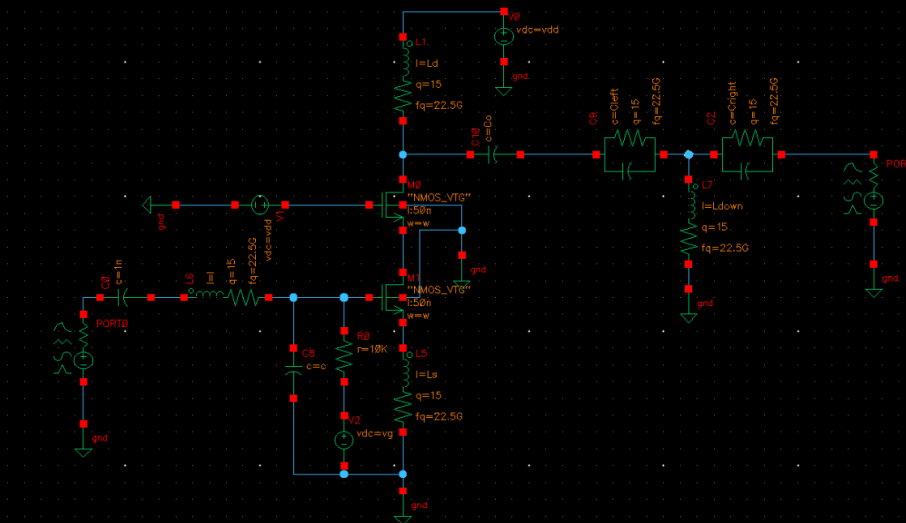
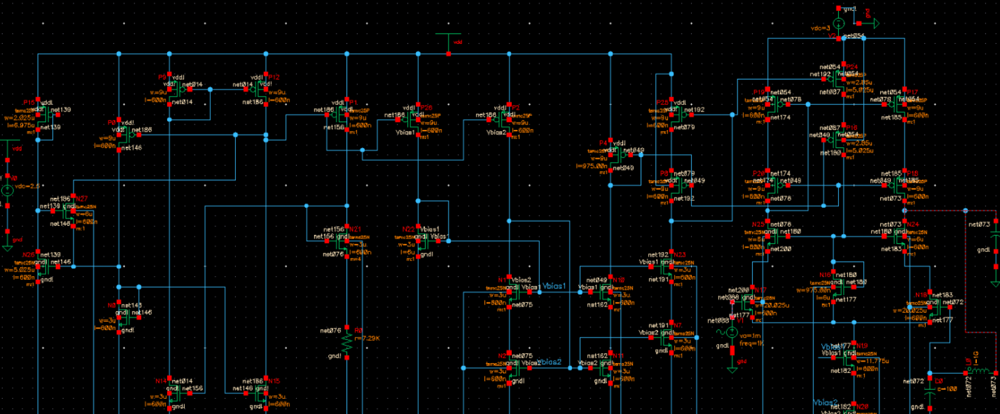
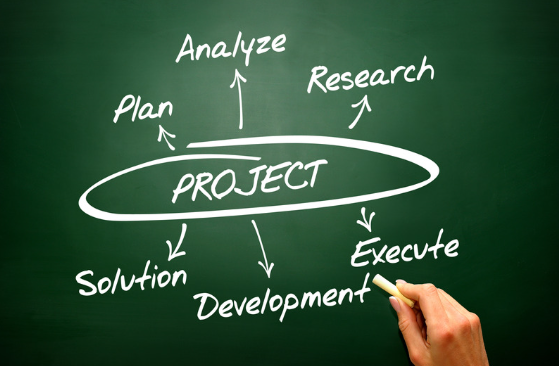
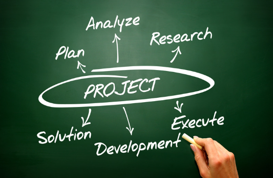

MY PROJECTS


![[PROJECT 2 NAME] - Image 2](./assets/project-2/image-2.png) 

LNA
Source Degenarted low noise amplifier
[PROJECT 1 NAME]
[Brief Description]
Telescopic Cacode
TELESCOPIC CASCODE DIFFERENTIAL STAGE DESIGN
[PROJECT 2 NAME]
[Brief Description]
[PROJECT 3 NAME]
[Tech Stack • Listed • Here]
[PROJECT 3 NAME]
[Brief Description]
[PROJECT 4 NAME]
[Tech Stack • Listed • Here]
[PROJECT 4 NAME]
[Brief Description]